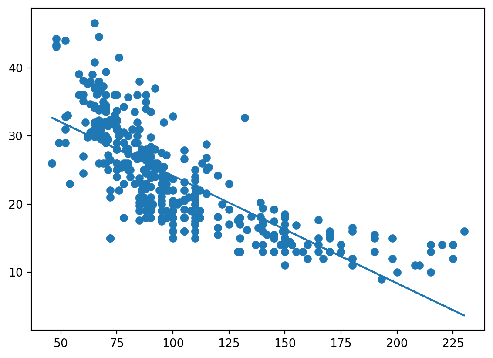
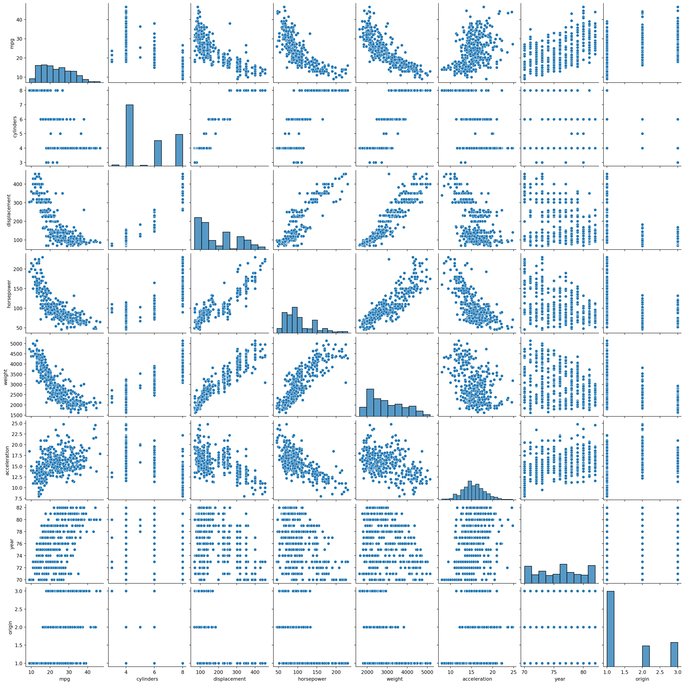

50 + 20 * 4 + 0.07 * 110 + 35 + 0.01*4*110 -10*4137.1Update 1/11 Removed some exercises and modified the extent of the curriculum.
statsmodels. There is a lot to read this week, but the content is slightly easier than before.All exercises in Chapter 3 are recommended!
We are dealing with the model \[Y = \beta_0 + \beta_1\cdot GPA + \beta_2 \cdot IQ + \beta_3 * Level + \beta_4 \cdot GPA \cdot IQ + \beta_5 \cdot GPA \cdot Level +\epsilon.\]
Plugging in the estimated coefficients, we have
\[\hat{y} = 50 + 20 \cdot GPA + 0.07 \cdot IQ + 35 \cdot Level + 0.01 \cdot GPA \cdot IQ -10 \cdot GPA \cdot Level.\]
First let \(Level = 1\), i.e., we have college education. The equation becomes:
\[\hat{y} = 50 + 20 \cdot GPA + 0.07 \cdot IQ + 35+ 0.01 \cdot GPA \cdot IQ -10 \cdot GPA.\] Which simplied equals: \[\hat{y} = 85 + 10 \cdot GPA + 0.07 \cdot IQ + 0.01 \cdot GPA \cdot IQ.\] Now consider \(Level=0\). The equation becomes: \[\hat{y}' = 50 + 20 \cdot GPA + 0.07 \cdot IQ + 0.01 \cdot GPA \cdot IQ.\] Then \[\hat{y}-\hat{y}'=35 - 10\cdot GPA.\] Recall that \(0 \leq GPA\leq 4\). Hence the maximal value of \(\hat{y}-\hat{y}'\) is \(25\) when GPA is \(1\), which means the college graduate earns \(25\)k more than the high school graduate. The minimal value is \(-5\) when the GPA is \(4\), meaning that the college graduate earn less on average when the GPA is high enough.
Thus the correct choice is (iii). Note that this is unlikely to be true in reality!
Use the equation \[\hat{y} = 50 + 20 \cdot GPA + 0.07 \cdot IQ + 35 \cdot Level + 0.01 \cdot GPA \cdot IQ -10 \cdot GPA \cdot Level,\] we find that \[\hat{y} = 50 + 20 \cdot 4 + 0.07\cdot 110 + 35 + 0.01\cdot 4 \cdot 110 -10\cdot 4.\] We can calculate this:
50 + 20 * 4 + 0.07 * 110 + 35 + 0.01*4*110 -10*4137.1This can only be judged by looking at the p-value for the coefficient. We don’t know the sample size, and have limited information about the variance of the IQ, so we cannot say for certain. The effect, however, is likely to be very small.
import pandas as pd
import statsmodels.formula.api as smf
auto = pd.read_csv("Auto.csv", na_values="?")
auto = auto.dropna()
auto.info()<class 'pandas.core.frame.DataFrame'>
Int64Index: 392 entries, 0 to 396
Data columns (total 9 columns):
# Column Non-Null Count Dtype
--- ------ -------------- -----
0 mpg 392 non-null float64
1 cylinders 392 non-null int64
2 displacement 392 non-null float64
3 horsepower 392 non-null float64
4 weight 392 non-null int64
5 acceleration 392 non-null float64
6 year 392 non-null int64
7 origin 392 non-null int64
8 name 392 non-null object
dtypes: float64(4), int64(4), object(1)
memory usage: 30.6+ KBNow we fit the model.
fit = smf.ols("mpg ~ horsepower", data = auto).fit()
fit.summary()| Dep. Variable: | mpg | R-squared: | 0.606 |
| Model: | OLS | Adj. R-squared: | 0.605 |
| Method: | Least Squares | F-statistic: | 599.7 |
| Date: | Thu, 09 Nov 2023 | Prob (F-statistic): | 7.03e-81 |
| Time: | 19:04:24 | Log-Likelihood: | -1178.7 |
| No. Observations: | 392 | AIC: | 2361. |
| Df Residuals: | 390 | BIC: | 2369. |
| Df Model: | 1 | ||
| Covariance Type: | nonrobust |
| coef | std err | t | P>|t| | [0.025 | 0.975] | |
| Intercept | 39.9359 | 0.717 | 55.660 | 0.000 | 38.525 | 41.347 |
| horsepower | -0.1578 | 0.006 | -24.489 | 0.000 | -0.171 | -0.145 |
| Omnibus: | 16.432 | Durbin-Watson: | 0.920 |
| Prob(Omnibus): | 0.000 | Jarque-Bera (JB): | 17.305 |
| Skew: | 0.492 | Prob(JB): | 0.000175 |
| Kurtosis: | 3.299 | Cond. No. | 322. |
fit.conf_int()| 0 | 1 | |
|---|---|---|
| Intercept | 38.525212 | 41.346510 |
| horsepower | -0.170517 | -0.145172 |
import matplotlib.pyplot as plt
plt.clf()
plt.scatter(auto.horsepower, auto.mpg)
params = smf.ols("mpg ~ horsepower", data = auto).fit().params
plt.plot(auto.horsepower, auto.horsepower * params[1] + params[0])
plt.show()
import pandas as pd
import statsmodels.formula.api as smf
auto = pd.read_csv("Auto.csv", na_values="?")
auto = auto.dropna()import seaborn as sns
sns.pairplot(auto)
pd.set_option('display.max_rows', 500)
pd.set_option('display.max_columns', 500)
pd.set_option('display.width', 1000)
auto.drop("name", axis=1).corr()| mpg | cylinders | displacement | horsepower | weight | acceleration | year | origin | |
|---|---|---|---|---|---|---|---|---|
| mpg | 1.000000 | -0.777618 | -0.805127 | -0.778427 | -0.832244 | 0.423329 | 0.580541 | 0.565209 |
| cylinders | -0.777618 | 1.000000 | 0.950823 | 0.842983 | 0.897527 | -0.504683 | -0.345647 | -0.568932 |
| displacement | -0.805127 | 0.950823 | 1.000000 | 0.897257 | 0.932994 | -0.543800 | -0.369855 | -0.614535 |
| horsepower | -0.778427 | 0.842983 | 0.897257 | 1.000000 | 0.864538 | -0.689196 | -0.416361 | -0.455171 |
| weight | -0.832244 | 0.897527 | 0.932994 | 0.864538 | 1.000000 | -0.416839 | -0.309120 | -0.585005 |
| acceleration | 0.423329 | -0.504683 | -0.543800 | -0.689196 | -0.416839 | 1.000000 | 0.290316 | 0.212746 |
| year | 0.580541 | -0.345647 | -0.369855 | -0.416361 | -0.309120 | 0.290316 | 1.000000 | 0.181528 |
| origin | 0.565209 | -0.568932 | -0.614535 | -0.455171 | -0.585005 | 0.212746 | 0.181528 | 1.000000 |
First, make a formula including all relevant variables. Try to understand the code below using the documentation of join if needed.
formula = "mpg" + "~" + "+".join(auto.columns.difference(["name", "mpg"]))
formula'mpg~acceleration+cylinders+displacement+horsepower+origin+weight+year'Now we fit the model.
fit = smf.ols(formula, auto).fit()
fit.summary()| Dep. Variable: | mpg | R-squared: | 0.821 |
| Model: | OLS | Adj. R-squared: | 0.818 |
| Method: | Least Squares | F-statistic: | 252.4 |
| Date: | Thu, 09 Nov 2023 | Prob (F-statistic): | 2.04e-139 |
| Time: | 19:04:30 | Log-Likelihood: | -1023.5 |
| No. Observations: | 392 | AIC: | 2063. |
| Df Residuals: | 384 | BIC: | 2095. |
| Df Model: | 7 | ||
| Covariance Type: | nonrobust |
| coef | std err | t | P>|t| | [0.025 | 0.975] | |
| Intercept | -17.2184 | 4.644 | -3.707 | 0.000 | -26.350 | -8.087 |
| acceleration | 0.0806 | 0.099 | 0.815 | 0.415 | -0.114 | 0.275 |
| cylinders | -0.4934 | 0.323 | -1.526 | 0.128 | -1.129 | 0.142 |
| displacement | 0.0199 | 0.008 | 2.647 | 0.008 | 0.005 | 0.035 |
| horsepower | -0.0170 | 0.014 | -1.230 | 0.220 | -0.044 | 0.010 |
| origin | 1.4261 | 0.278 | 5.127 | 0.000 | 0.879 | 1.973 |
| weight | -0.0065 | 0.001 | -9.929 | 0.000 | -0.008 | -0.005 |
| year | 0.7508 | 0.051 | 14.729 | 0.000 | 0.651 | 0.851 |
| Omnibus: | 31.906 | Durbin-Watson: | 1.309 |
| Prob(Omnibus): | 0.000 | Jarque-Bera (JB): | 53.100 |
| Skew: | 0.529 | Prob(JB): | 2.95e-12 |
| Kurtosis: | 4.460 | Cond. No. | 8.59e+04 |